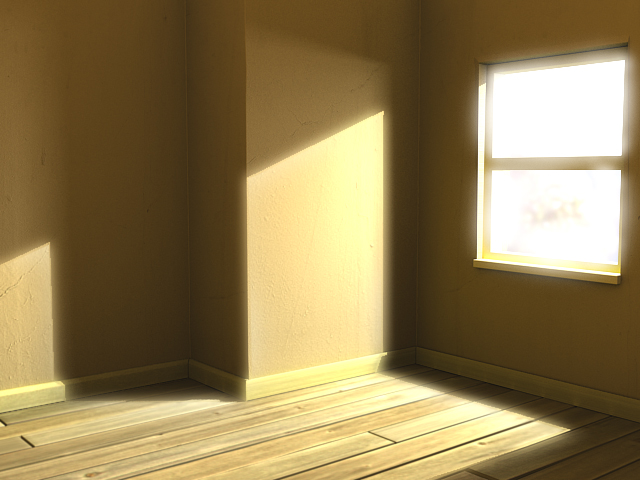
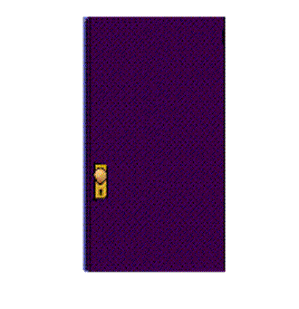
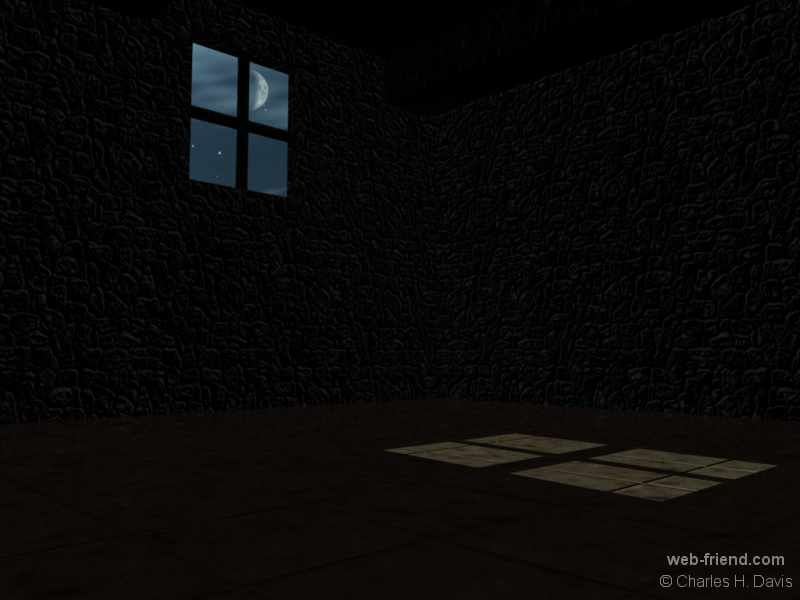

The premise behind this simple adventure is there is a magic cloak you are wearing that won't let you see in a certain room, until you remove it and hang it up in another room. The concept for this adventure is from Roger Firth's IF pages.
The full specification we will build this adventure to is found here.
To start with, anytime you are going to build an adventure, you want to make sure your work gets saved. If you look at the upper right corner of the window you'll see a checkbox labeled Snapshot. Make sure this is checked! This will tell the system any time you surf to another page, or close the window, to automatically save your changes. This will help prevent losing any of your work.
Do: Check the Snapshot checkbox
The specification says the adventure consists of three rooms, a Foyer, a Bar, and a Cloakroom. We'll go ahead and build those now. Since we already have one room that you are currently standing in, we'll rename this current room and convert it into a Foyer.
Type: name here Foyer
This will set the name property on 'here' to Foyer. "Here" and "me" are special words that the parser knows to mean "my current room" and "my character" respectively. If you want the full details on any command you can always use the help command.
Type: help name
This will show you the possible arguments to the name command, what type they should be, and whether they are optional or not.
Moving along, we'll assume you want to make this a graphical adventure, so let's add a picture to our foyer! To do this, click and drag any image you can find on the Internet, over the very upper left corner of the window. This will load in the image as the room's background. If you drag it anyhere but the corner, it will 'drop' into a room as an item, not the background. Very important: You must click and drag a non-linked image, otherwise it will attempt to drag over the link and not the image. If you want to drag an image that has been linked, right click on the image, and your browser should have an option to "View Image" where it should show the image by iteself. Now you can drag it.
Surf around the net and find yourself an image to your liking. Google Images is always a great place to start. If you can't find one you like, try dragging this one here:
Do: Click and drag the image to the upper left corner of the Contents window
You can see it said it set the imageUrl property on the Foyer. You could have typed in setprop here imageUrl 'any URL here' to do the same thing, only that's not as easy as dragging and dropping!!
Now let's create the other two rooms.
Type: @room Bar
Type: @room Cloakroom
You see that it created both rooms and assigned them both an identifier, probably @4 and @6. You can refer to objects directly by their identifier for any command that requires an object. However, this does not mean you have access or priveledges to interact with those objects. If there was a weapon in another room, even though you might know its identifier was @12, if you said get @12 instead of get sword, it would still inform you that you are not able to grab it. Luckily, most of the commands used to build and modify don't require you to be near an item to modify it, although it is usually easier to do so.
Our next step is to assign text descriptions to the rooms. Since we know the identifiers for each room, this is simple.
Type: @desc @0 "You are standing in a spacious hall, splendidly
decorated in red and gold, with glittering chandeliers overhead. The
entrance from the street is to the north, and there are doorways south
and west."
Type: @desc @4 "It's pitch black in here, and you can't see a thing. You better head back north before you disturb anything!"
Type: @desc @6 "The walls of this small room were clearly once lined
with hooks, though now only one remains. The exist is a door to the
east."
Now we need to create some exits so you can travel from one room to another. There is a command @exit that does just that, it creates a single exit in the room you are currently standing in. There are exits to the north, south, and west.
Type: @exit north
Type: @exit south
Type: @exit west
The exit to the North doesn't go anywhere, so we aren't going to do anything to it. An exit that has not been linked to a destination room will not let the player pass through it. We want the south exit to go into the bar, and the west exit to go into the cloakroom. The @link command is used to connect exits to a destination. To give the adventure a little more flavor, we'll give a custom error message if the user attempts to use the north exit to the street.
Type: @link south @4
Type: @link west @6
Type: setprop north CanMove "You've only just arrived, and besides, the weather outside seems to be getting worse."
Now that the foyer is done, let's head into the cloakroom and complete that room. The easiest way is to just walk there...
Type: west
You should see the screen has turned blank, because you are in a new room with no background image set. Find one one and drag it over to the upper left corner again. Now we need a hook in this room to interact with. Find an image of a hook and drag it into the middle of the room, this will make a hook object. After you have dragged one over, you can then click and drag it to reposition it wherever you like on the screen. You'll quickly learn that .JPG files do not make for good objects, because they don't support transparency like .GIF and .PNG files do. When creating objects, you'll want to avoid .JPG files for a polished look.

Do: Click and drag the image to the upper left corner of the Contents window


Do: Click and drag the hook above to add it into the room.
Do: Click and drag the hook in the room to relocate it.
Do: Click and drag the cloak to add it into the room.
Often images will not be the proper scale when you've dragged them into your room. To remedy this, hold the SHIFT key while clicking on an item and then when you drag your mouse, it will scale the image up or down.
Do: Hold the SHIFT key down and at the same time click and drag the hook in the room to resize it.
Do: Hold the SHIFT key down and at the same time click and drag the cloak in the room to resize it.
Do: Click and drag the cloak to the right side of the screen where it says Inventory to pick it up.
Now the hook should be somewhere in the room, and the cloak should be in your inventory. The Inventory window is where it shows the items you are currently carrying, so when you move from room to room, the contents of this window will not change unless you get or drop something. When you drag and drop an image into the room, it gets created with the name of the file, so odds are, the object doesn't have the proper name. Let's fix these items before moving on.
Type: @name @11 hook
Type: @name @12 cloak
Now one of the requirements of the game is that you can't actually pick up the hook, it is supposed to remain in the cloak room! To stop the user from taking a certain action, you can set properties up on objects to block the user from doing things they aren't allowed to. To stop the user from 'getting' an object, you'll want to set the 'CanGet' property to return an error message. This will stop the user from proceeding. If there is no CanGet property found, the get action will proceed normally.
Type: setprop hook CanGet "You cannot get the hook, it is firmly attached to the wall."
Type: get hook
When you tried to get the hook, it should have printed that error message and not let you pick up the hook. If you did the setprop on me, it would stop you from picking up all objects anywhere at anytime, and if you did setprop here, it would stop you from picking up any objects from only that location.
Now we need an exit in here to get back out into the Foyer. Instead of typing in the @exit command, let's drag and drop an image to create an exit.

Do: Drag and drop a door image into the room
Now when you drop things into the room, just are just normal objects by default. To change the type of the object from a normal "Thing" to an "Exit" we'll use the mutate command. This command changes the base type of the object, but will leave its graphic image intact. Any other properties you may have set on the object will be lost.
Type: name @13 east
Type: mutate east Exit
Type: @link east @0
This will rename the door, turn it into an Exit, and link it back to The Foyer. Now when you double click on the door image, you'll go back to The Foyer.
Do: Double click the door
Type: south
The system already knows not to allow players to pick up exits, so you don't have to setprop CanGet on the door. Now you should be in the emtpy bar. Let's use yet another technique to create the exit east back to the Foyer. Sometimes the room image may already have a doorway on it, so you don't need to use an additional image for the door, you just want to make that part of the room's image to be clickable. To do this, use the setprop command to set the coords property on the exit to determine the clickable area on the room. This uses standard HTML type image maps.

Do: Click and drag the room image to the upper left corner
Type: @exit north
Type: @link north @0
Type: setprop north coords "0,0,500,300"
This room is where the last bit of the adventure takes place, and the trickiest part. Since you're not allowed to look in this room unless you've left the cloak behind, we're going to add a CanLook property on the room. However, this must be done conditionally, so we'll have to write a Javascript statement that checks this condition. Since this will be a conditional function and not just a string property, we're going to use the setfunc command instead of setprop.
Type: setprop here CanDrop "You cannot drop anything in here, you might lose it!"
Type: setfunc here CanLook "function() { if (obj(6).ownsThing(obj(12)))
{ DoSetProp(4, 'imageUrl',
'http://www.lesvoutes.com/bar/bar_lesvoutes1.jpg'); DoSetProp(4,
'description', 'You are in a large well lit bar. Congrats! You won!');
} }"
How this works, is we check to see if the cloak room (@4) contains the cloak (@6). ownsThing() will also check all of the items in the room for the cloak. If this is true, we call two functions, one to set a new graphic image for the room, and a second one to update the description informing the user they solved the puzzle.
Final step! We just need to move back north and save the game so players will start in the Foyer! The snapshot command is used for saving the current state. Any time you want to make sure your work is saved, you can activate the snapshot command, and it will rewrite the current HTML file with all of your changes. Email it to your friends so they can try it out!
Do: Click the image map for the north exit or Type: north
Type: snapshot
Congratulations! This completes your construction of the Cloak of Darkness tutorial adventure!